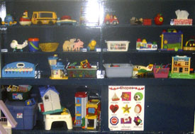
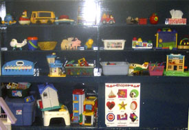

wvcp.registrar@gmail.com
470 roosevelt avenue
ottawa, on K2A 1Z6
613.728.9473
Registration Package
Registration Package can be obtained by emailing wvcp.registrar@gmail.com or download and print the following:
registration package
- 2018/2019 Registration: Apply now with our online registration form!
- 2018/2019 Registration Information Sheet
- 2018/2019 Offence Declaration Form
- 2017/2018 Registration Package
- Immunization Information
- Ontario Vaccine Requirements
- Police Records Check Application Form
- Pre-Authorized Debit Form - Personal Accounts Plan
- Pre-Authorized Debit Form - Business Accounts Plan
Registration opens in February/March of each year for the following September. Returning students and alumni have a priority registration period beginning February 13th, 2018.
Registration is on-going throughout the year as spots become available. Wait lists are maintained by the Registrar.
Have a question or comment? Contact us
Parent Handbook
The Parent Handbook (updated February 2018) is available at the following link: WVCP Parent Handbook


Programs, Schedules and Tuition
The Westboro Village Cooperative Preschool strives to balance the consistency that your children's education requires with the flexibility needed by the modern parent. Our preschool offers age-specific programs for your two, three, and/or four year-olds*. In addition, there are two fully optional extension programs for our students to enjoy if they wish to.
All our programs are diaper-friendly (including cloth diapers!).
Programs
The 'TWOS' program: For 2/3 year-olds
Tuesday & Thursday, 9:15am – 11:30am
September to June.
Children who are two years old in September of that year are eligible for the Two’s program.
Two spaces are available, in the same year, for children who will be two by December 31.
The 'THREEs' Morning (AM) program: For 3/4 year-olds
Monday, Wednesday, Friday, 9:15am – 11:30am
September to June.
Children who will be three by the 31st of December of that year are eligible for the Three’s program.
The 'threes' Afternoon program (PM): for 3/4 year-olds
Monday, Wednesday, Friday, 12:30-3:00 pm.
September to June
Children turning three by December 31 of that year, and for those turning four (i.e., open to JK students).
The 'threes' Extended Day: for 3/4 year-olds
Monday, Wednesday, Friday, 9:15-2:00 pm.
September to June
Children turning three by December 31 of that year, and for those turning four (i.e., open to JK students).
THE 'THREES' full day PROGRAM: FOR 3/4 YEAR-OLDS
Monday, Wednesday, Friday, 9:15-3:00 pm.
September to June
Children turning three by December 31 of that year, and for those turning four (i.e., open to JK students).
Extension Programs
Lunch & Learn
Monday to Friday, 11:30am-12:30am.
A supervised, sit-down lunch, followed by story-time, and/or play.
Available to students of the Twos, Threes AM or Threes PM, either following, or prior to, their respective school days.
Children enrolled in the Threes Full Day Program will be included in the Lunch & Learn program as part of their tuition and daily schedule.
Lunch to be provided by parent (in accordance to restrictions per WVCP’s allergy policy. To find out more contact us.)
EARLY DROP-OFF PROGRAM
Available to the Twos' program and Threes' AM and Extended programs.
Open drop-off between 8:15 – 9:15 a.m.
 
Tuitions
(where it’s proved that a cooperative philosophy PAYS…)
| Programs for 2018/2019 | Drop off time | Pick up time | Cost (per month) |
|---|---|---|---|
| 2's Program (Tuesday and Thursday) |
9:15 AM | 11:30 AM | $190 |
| 2's Early Drop Off (Tuesday and Thursday) |
8:15 AM | ADD ON TO A.M. PROGRAM | $65 |
| 2's Lunch & Learn (Tuesday and Thursday) |
ADD ON TO A.M. PROGRAM | 12:30 PM | $90 |
| 3's Full Day (Monday, Wednesday & Friday) |
9:15 AM | 3:00 PM | $590 |
| 3's Extended Day (Monday, Wednesday & Friday) |
9:15 AM | 2:00 PM | $480 |
| 3's A.M. (Monday, Wednesday & Friday) |
9:15 AM | 11:30 AM | $245 |
| 3's P.M. (Monday, Wednesday & Friday) |
12:30 PM | 3:00 PM | $260 |
| 3's Lunch & Learn (Monday, Wednesday & Friday) |
11:30 AM | 12:30 PM | $115 |
| 3's Early Drop Off (Monday, Wednesday & Friday) |
8:15 AM | ADD ON TO A.M. / EXTENDED PROGRAM | $90 |
| Registration Fee (Non-Refundable) |
$60 |
All programs run from Sept.-June, or ten (10) Months. Tuition costs DO NOT include the $60, NON-REFUNDABLE, membership fee. If your child is placed on the wait-list your cheque for the membership fee will not be deposited until a space becomes available and you have confirmed your child's placement. This fee does not apply to returning students.
Children attending the preschool are automatically registered for the full year.
Fees are kept at a reasonable level thanks to parental participation in the operation of the school. Fees are set by the Board and approved at a General Meeting.
Westboro Village Cooperative Preschool receives grants from the City of Ottawa and the Ministry of Education which assist with keeping our fees low.
Withdrawal & Refund Policy
If a parent decides to permanently withdraw his/her child from the preschool, thirty (30) days written notice must be given to the Registrar. Provided thirty days notice is given, the non-refundable June deposit will be applied toward the final month’s tuition. If participation in a program is terminated mid-month, the balance of that month’s fees will also be forfeited. No refunds will be given where written notice is received on or after the third Friday in February, due to the difficulty of filling vacancies at that time of year.